NOTE: This vigentte is optimised for longer simulation runs. Therefore the output is not as pleasant due to the fact that the dummy setas file have a running time of 5 years.
In order to use this vignette make sure to render model-preprocess.Rmd first. Either save the resulting list of dataframes as shown in data-raw/data-vignette-model-preprocess.R or render both vignettes model-preprocess.Rmd and model-calibration.Rmd in the same R-instance. Of course, you can also use a personalised version of mode-preprocess.Rmd. Please make sure to add all resulting dataframes to the list of dataframes at the end of the preprocess vignette and change model-calibration.Rmd accordingly.
library("atlantistools")
library("ggplot2")
library("gridExtra")
fig_height2 <- 11
gen_labels <- list(x = "Time [years]", y = "Biomass [t]")
# You should be able to build the vignette either by clicking on "Knit PDF" in RStudio or with
# rmarkdown::render("model-calibration.Rmd")User Input
This section is used to read in the SETAS dummy files. Please change this accordingly.
result <- preprocess
d <- system.file("extdata", "setas-model-new-trunk", package = "atlantistools")
# External recruitment data
ex_rec_ssb <- read.csv(file.path(d, "setas-ssb-rec.csv"), stringsAsFactors = FALSE)
# External biomass data
ex_bio <- read.csv(file.path(d, "setas-bench.csv"), stringsAsFactors = FALSE)
# bgm file
bgm <- file.path(d, "VMPA_setas.bgm")Whole system plots!
Overall biomass
df_bio <- combine_groups(result$biomass, group_col = "species", combine_thresh = 10)## Warning: `summarise_()` was deprecated in dplyr 0.7.0.
## Please use `summarise()` instead.
## This warning is displayed once every 8 hours.
## Call `lifecycle::last_lifecycle_warnings()` to see where this warning was generated.## Warning: `group_by_()` was deprecated in dplyr 0.7.0.
## Please use `group_by()` instead.
## See vignette('programming') for more help
## This warning is displayed once every 8 hours.
## Call `lifecycle::last_lifecycle_warnings()` to see where this warning was generated.## Warning: `arrange_()` was deprecated in dplyr 0.7.0.
## Please use `arrange()` instead.
## See vignette('programming') for more help
## This warning is displayed once every 8 hours.
## Call `lifecycle::last_lifecycle_warnings()` to see where this warning was generated.## Joining, by = "species"
plot <- plot_bar(df_bio)
update_labels(plot, labels = gen_labels)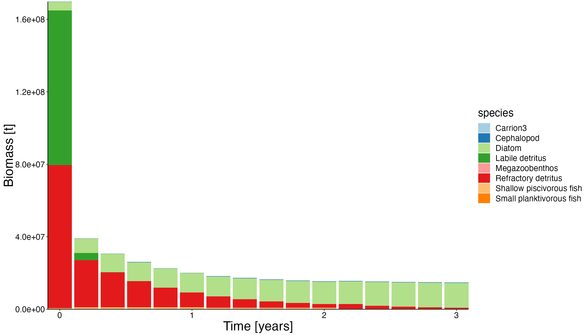

Biomass@age timeseries
plot <- plot_line(result$biomass_age, col = "agecl")
update_labels(p = plot, labels = c(gen_labels, list(colour = "Ageclass")))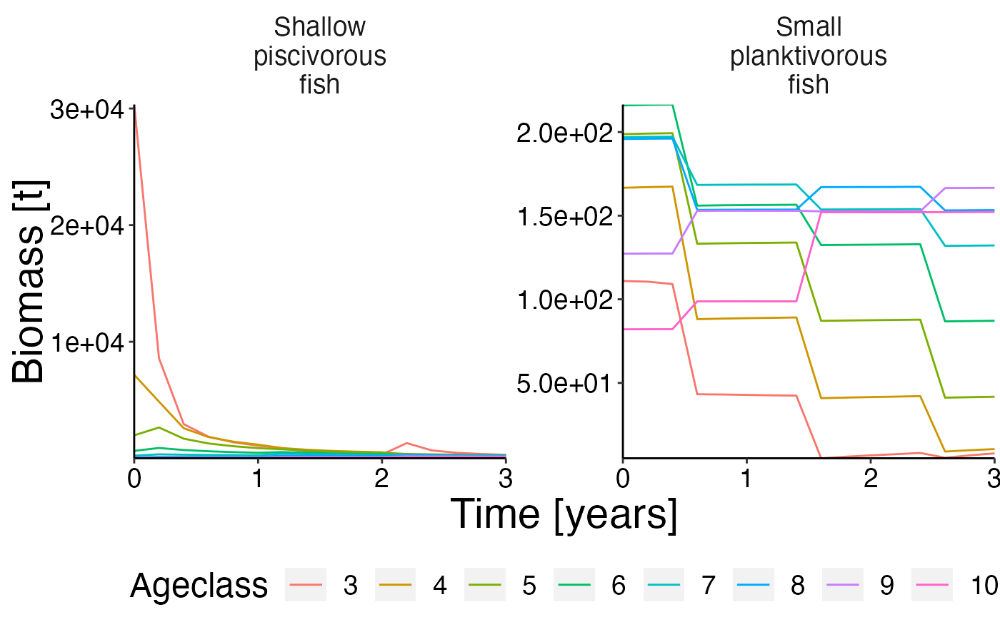
Number timeseries
plot <- plot_line(result$nums)
update_labels(p = plot, labels = list(x = "Time [years]", y = "Numbers"))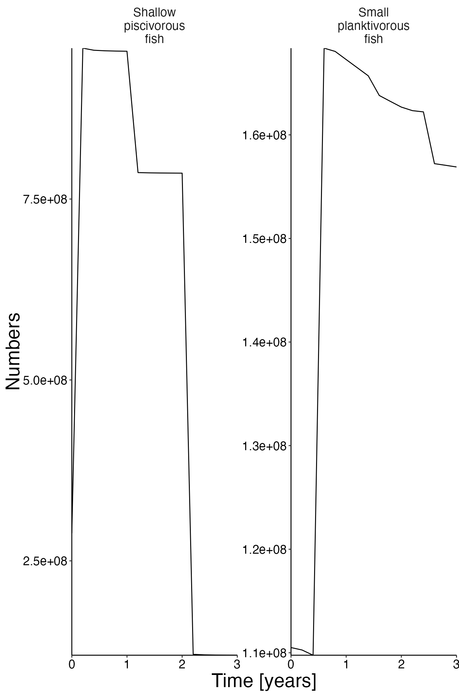
Number@age timeseries
plot <- plot_line(result$nums_age, col = "agecl")
update_labels(p = plot, labels = list(x = "Time [years]", y = "Numbers", colour = "Ageclass"))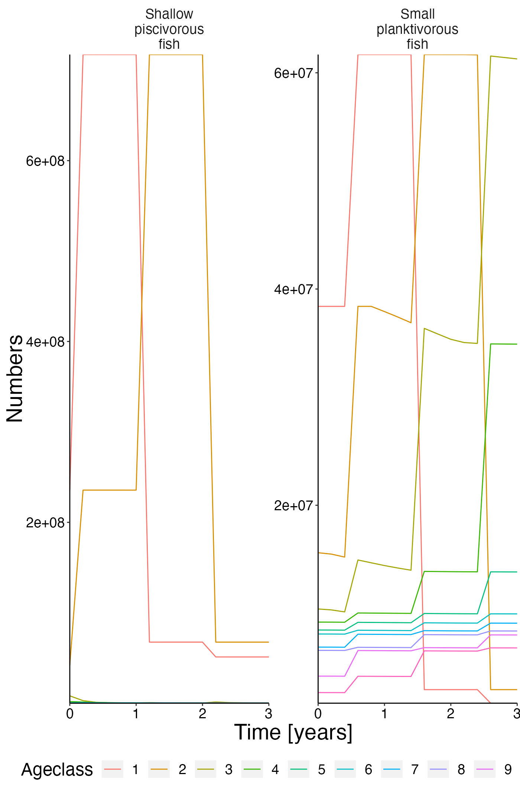
Biomass benchmark
names(ex_bio)[names(ex_bio) == "biomass"] <- "atoutput"
data <- result$biomass
data$model <- "atlantis"
comp <- rbind(ex_bio, data, stringsAsFactors = FALSE)
# Show atlantis as first factor!
comp$model <- factor(comp$model, levels = c("atlantis", sort(unique(comp$model))[sort(unique(comp$model)) != "atlantis"]))
# Create plot
plot <- plot_line(comp, col = "model")
update_labels(plot, gen_labels)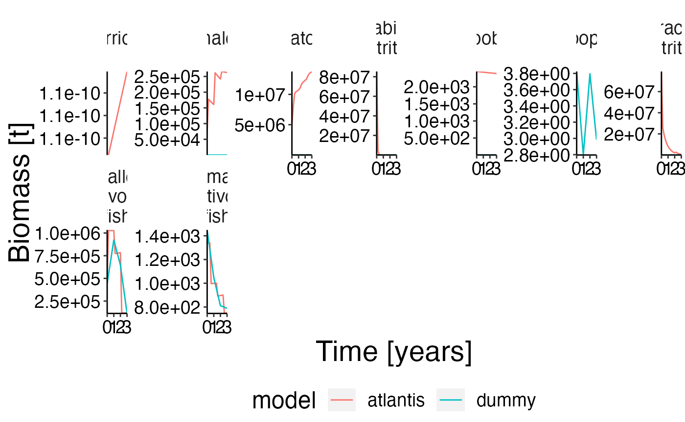
Biomass benchmark 2
plot <- plot_line(result$biomass) %>% update_labels(labels = gen_labels)
plot_add_range(plot, ex_bio)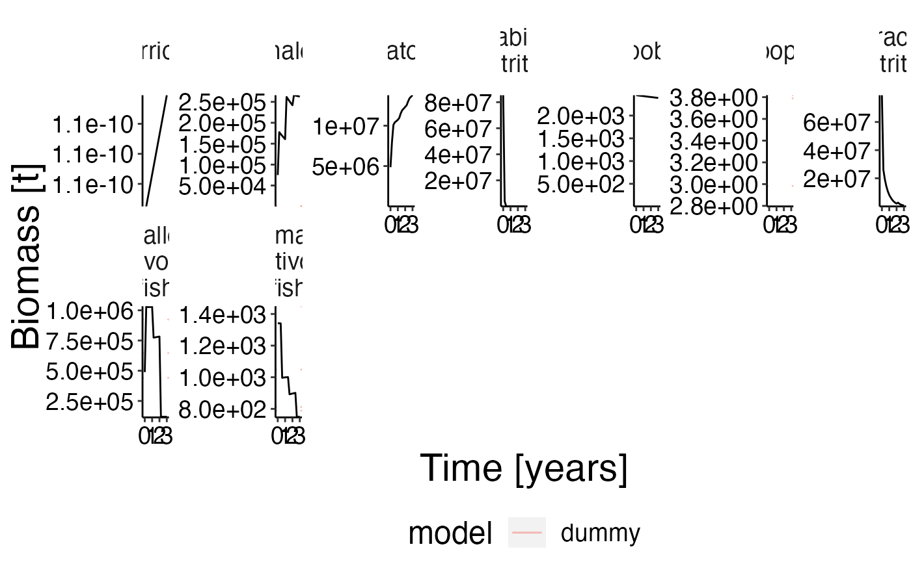
Physics
plot <- plot_line(result$physics, wrap = NULL)
custom_grid(plot, grid_x = "polygon", grid_y = "variable")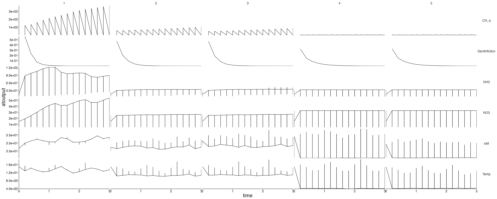
Physics
physics <- result$physics %>%
flip_layers() %>%
split(., .$variable)## Warning: `select_()` was deprecated in dplyr 0.7.0.
## Please use `select()` instead.
## This warning is displayed once every 8 hours.
## Call `lifecycle::last_lifecycle_warnings()` to see where this warning was generated.
plots <- lapply(physics, plot_line, wrap = NULL) %>%
lapply(., custom_grid, grid_x = "polygon", grid_y = "layer")
for (i in seq_along(plots)) {
cat(paste0("## ", names(plots)[i]), sep = "\n")
plot <- update_labels(plots[[i]], labels = list(y = names(plots)[i]))
print(plot)
cat("\n\n")
}Fluxes 1
plot <- flip_layers(result$flux) %>%
plot_line(wrap = NULL, col = "variable")
custom_grid(plot, grid_x = "polygon", grid_y = "layer")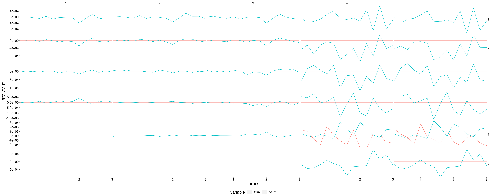
Fluxes 2
plot <- flip_layers(result$sink) %>%
plot_line(wrap = NULL, col = "variable")
custom_grid(plot, grid_x = "polygon", grid_y = "layer")
Relative change of water column height compared to nominal_dz
check_dz <- result$dz %>%
dplyr::left_join(result$nominal_dz, by = c("polygon", "layer")) %>%
dplyr::mutate(check_dz = atoutput.x / atoutput.y) %>%
dplyr::filter(!is.na(check_dz)) # remove sediment layer
plot <- plot_line(check_dz, x = "time", y = "check_dz", wrap = "polygon", col = "layer")
update_labels(plot, list(x = "Time [years]", y = expression(dz/nominal_dz)))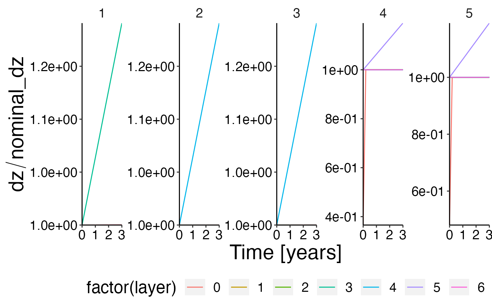
Calibration plots
Structural nitrogen
df_rel <- convert_relative_initial(result$structn_age)## Warning: `filter_()` was deprecated in dplyr 0.7.0.
## Please use `filter()` instead.
## See vignette('programming') for more help
## This warning is displayed once every 8 hours.
## Call `lifecycle::last_lifecycle_warnings()` to see where this warning was generated.## Warning: `mutate_()` was deprecated in dplyr 0.7.0.
## Please use `mutate()` instead.
## See vignette('programming') for more help
## This warning is displayed once every 8 hours.
## Call `lifecycle::last_lifecycle_warnings()` to see where this warning was generated.
plot <- plot_line(df_rel, col = "agecl")
plot <- update_labels(plot, list(x = "Time [years]", y = expression(SN/SN[init])))
plot_add_box(plot)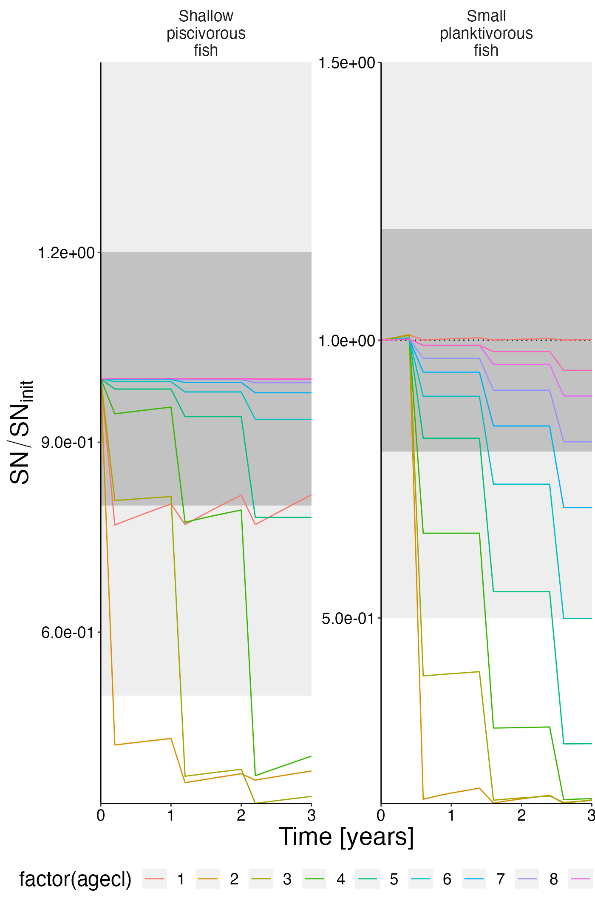
Reserve nitrogen
df_rel <- convert_relative_initial(result$resn_age)
plot <- plot_line(df_rel, col = "agecl")
plot <- update_labels(plot, list(x = "Time [years]", y = expression(RN/RN[init])))
plot_add_box(plot)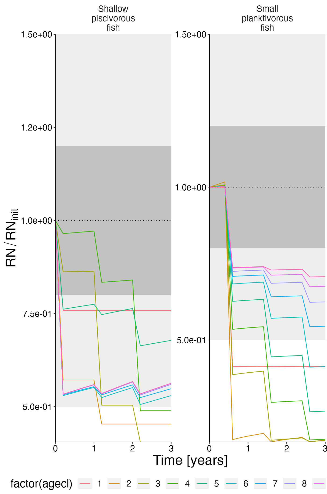
Biomass per ageclass
df_rel <- convert_relative_initial(result$biomass_age)
plot <- plot_line(df_rel, col = "agecl")
plot <- update_labels(plot, list(x = "Time [years]", y = expression(Biomass/Biomass[init])))
plot_add_box(plot)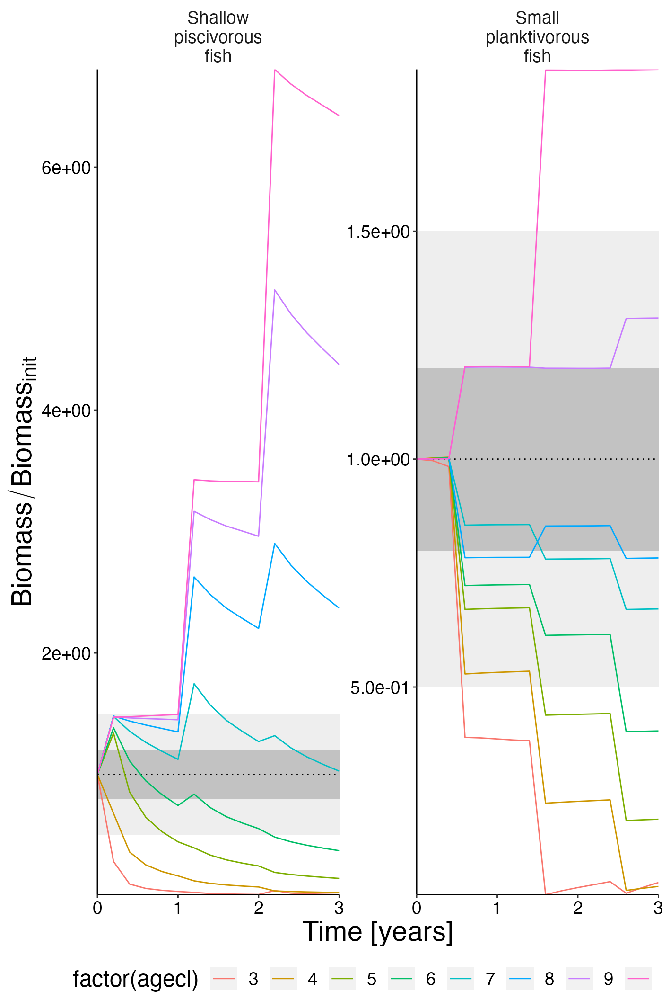
Eat per ageclass
df_rel <- convert_relative_initial(result$eat_age)
plot <- plot_line(df_rel, col = "agecl")
plot <- update_labels(plot, list(x = "Time [years]", y = expression(Cons./Cons.[init])))
plot_add_box(plot)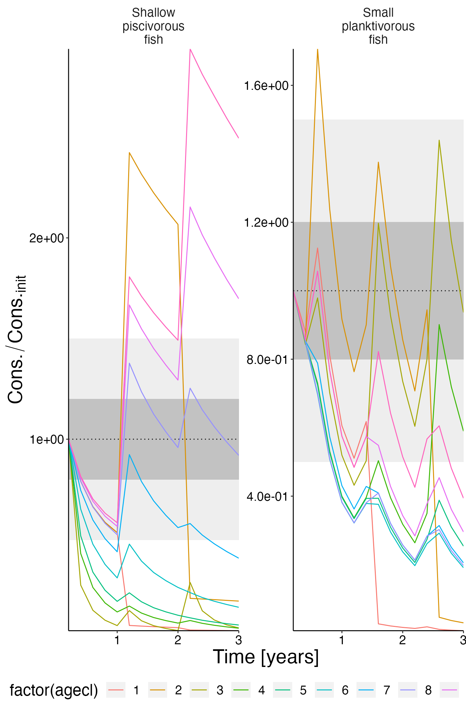
Growth per ageclass
df_rel <- convert_relative_initial(result$growth_age)
plot <- plot_line(df_rel, col = "agecl")
plot <- update_labels(plot, list(x = "Time [years]", y = expression(Growth/Growth[init])))
plot_add_box(plot)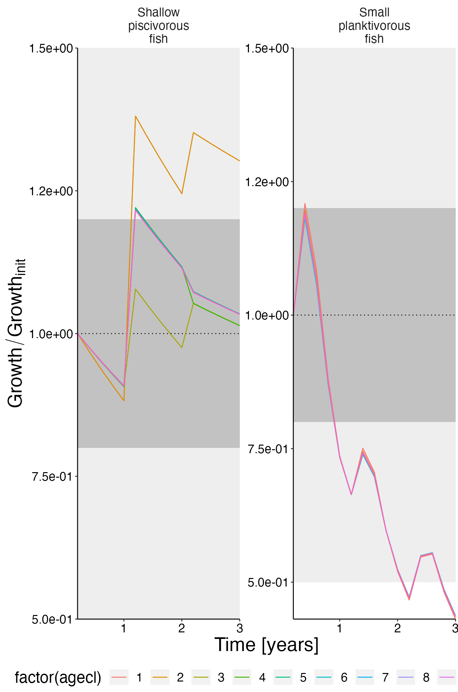
Growth in relation to initial conditions
plot <- plot_line(result$growth_rel_init, y = "gr_rel", col = "agecl")
update_labels(plot, list(y = expression((Growth - Growth[req])/Growth[req])))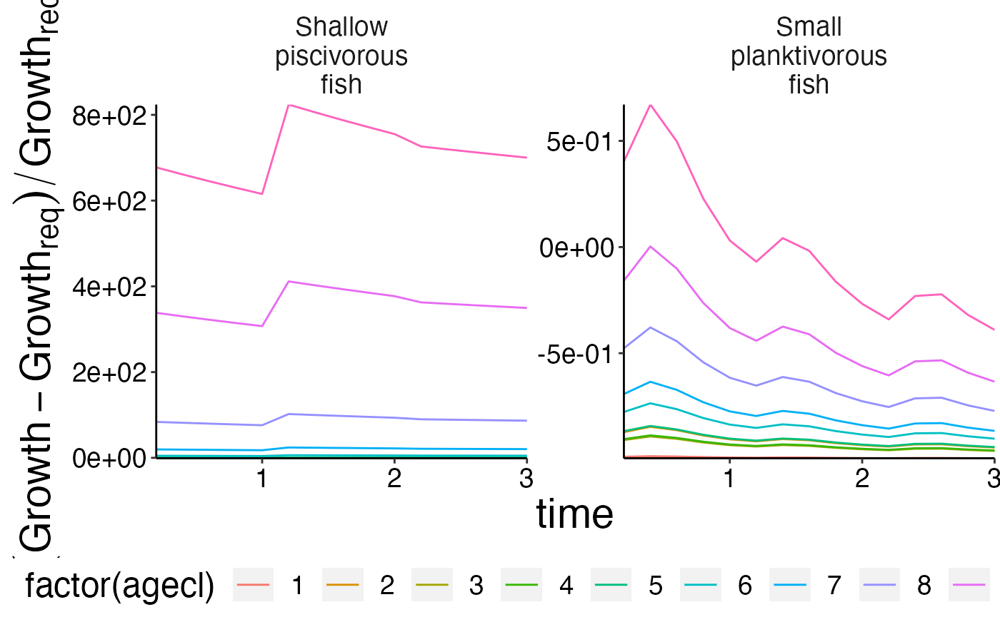
Numbers
df_rel <- convert_relative_initial(result$nums_age)
plot <- plot_line(df_rel, col = "agecl")
plot <- update_labels(plot, list(x = "Time [years]", y = expression(Numbers/Numbers[init])))
plot_add_box(plot)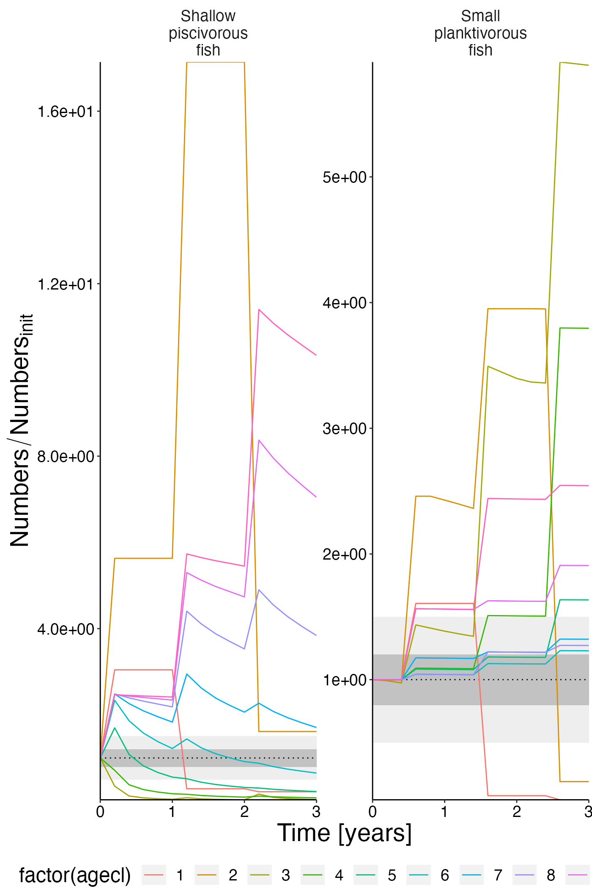
Biomass
df_rel <- convert_relative_initial(result$biomass)
plot <- plot_line(df_rel)
plot <- update_labels(plot, list(x = "Time [years]", y = expression(Biomass/Biomass[init])))
plot_add_box(plot)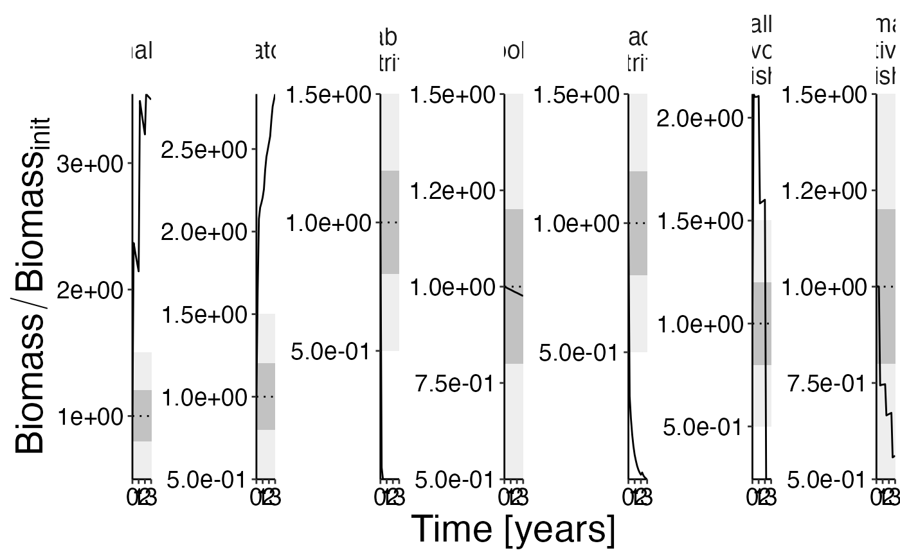
Distribution plots
Numbers @ age
df <- agg_perc(result$nums_age, groups = c("time", "species"))
plot <- plot_bar(df, fill = "agecl", wrap = "species")
update_labels(plot, labels = list(x = "Time [years]", y = "Numbers [%]"))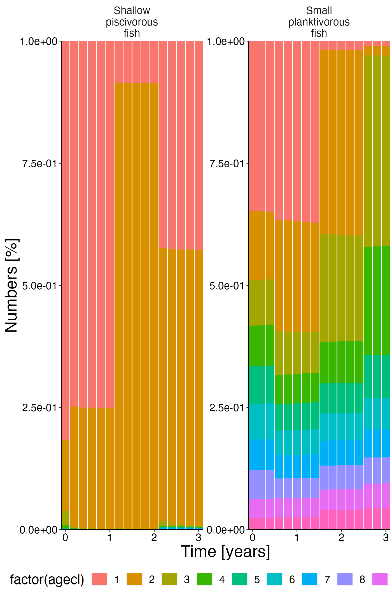
Biomass @ age
df <- agg_perc(result$biomass_age, groups = c("time", "species"))
plot <- plot_bar(df, fill = "agecl", wrap = "species")
update_labels(plot, labels = list(x = "Time [years]", y = "Biomass [%]"))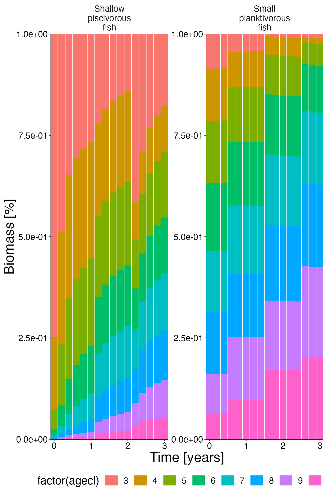
Diet Plots
## Joining, by = c("time", "pred", "agecl", "prey")
## Joining, by = c("time", "pred", "agecl", "prey")Spatial Plots 1
## Joining, by = "polygon"## Coordinate system already present. Adding new coordinate system, which will replace the existing one.
## Coordinate system already present. Adding new coordinate system, which will replace the existing one.
## Coordinate system already present. Adding new coordinate system, which will replace the existing one.
## Coordinate system already present. Adding new coordinate system, which will replace the existing one.
## Coordinate system already present. Adding new coordinate system, which will replace the existing one.
## Coordinate system already present. Adding new coordinate system, which will replace the existing one.
## Coordinate system already present. Adding new coordinate system, which will replace the existing one.
## Coordinate system already present. Adding new coordinate system, which will replace the existing one.
## Coordinate system already present. Adding new coordinate system, which will replace the existing one.
## Coordinate system already present. Adding new coordinate system, which will replace the existing one.